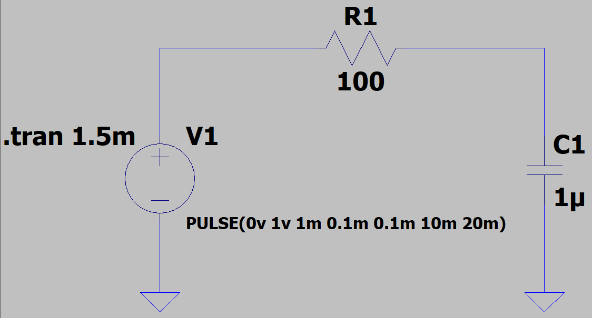

Building an Amp
In the next few months, I will be studying signal processing, acoustics, and electrical engineering to create an amplifier from scratch. I will post milestone updates here!
Overview
An amplifier takes an input signal and increases its magnitude by some scaling factor. Most commonly, amps are used in the context of music to produce sounds at varying audio levels. However, as illustrated below, percieved audio levels differ from actual, measured "loudness" (i.e. sound pressure level scale).

Red lines illustrate equal percieved loudness levels for varying frequencies.
Therefore, amplifying music volume by the same factor for all frequencies is ineffective. Furthermore, the goal of this project is to dynamically amplify an audio signal based on its frequency, resulting in constant percieved loudness regardless of frequency.
Resistors & Capacitors (Weeks 1-2)
In an RC circuit, the charging equation for the capacitor is as follows:
\[\large V_{cap} = V_0(1-e^{\frac{-t}{RC}})\]where $V_0$ is maximum voltage and $RC$ is the time-constant (resistance by capacitance). If we set $t=RC$, we get
\[\large V_{cap} = V_0(1-\frac{1}{e}).\]Therefore, we can find the time at which the capacitor is $\sim63.1\%$ charged--this time is the time constant, so we can solve for the unknown resistance or capacitance. I used LTSpice to design a simple RC schematic and simulate its behavior. In this circuit, I used a $1\text{V}$ pulse signal, $100\Omega$ resistor and a 1$\mu F$ capacitor; some quick calculations told me the time constant should be $0.1\text{ms}$.
LTSPice simulation of a basic RC circuit with quantities described above.
Transient analysis of the voltage across the capacitor.

From the data, the horizontal difference ($\Delta t$) is the time constant; i.e. $152\mu s$ or $0.152\text{ms}$.
Next I built the circuit and used the oscilloscope to analyze the real circuit. I measured the voltage across the capacitor using the oscilloscope.
Again, the horizontal difference ($\Delta t$) is the time constant; i.e. $166\mu s$ or $0.166\text{ms}$.
In comparing the calculated (ideal) value, the simulated value, and the real value, I found the data to be relatively consistent! I experimentally found an RC value of $0.159\text{ms}$, which isn't far off from the calculated $0.1\text{ms}$. Capacitors are a great way to store charges in circuits and then release them at a later point in time. Additionally, I explored the relationship between voltage and charge in a capacitor by applying some calculus.
\[\large \text{Q = CV},\] \[\large \frac{d\text{Q}}{dt} = C\frac{d\text{V}}{dt}, \] \[\int \frac{d\text{Q}}{dt} \,dt = C\int \frac{d\text{V}}{dt} \,dt.\]The graph of $V_{cap}$ is a phase shift away from the graph of $\frac{d\text{V}}{dt}$. The integral equation is unecessary, but I just think it looks cool :)